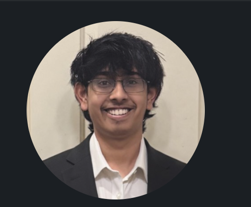

← Back to the piecesAbout Me
Hi, I’m Udeern.
Biomedical engineering student, researcher, and chess player.

What I’m working on
I’m studying biomedical engineering at UT Austin, with a materials science minor and an expected graduation in 2028. I’m also a co-founder and Head of Research at s9m Labs, where I help set the research direction around biological computation and how it could inform AI.
My work moves between experiments and code. I’ve built software to analyze microscopy movies, studied forces during walking, and helped students troubleshoot physiological measurements. The projects here show some of the methods and code behind that work.
Chess is my biggest hobby. That’s why this portfolio starts with a set of pieces: each one takes you to a different part of my work.